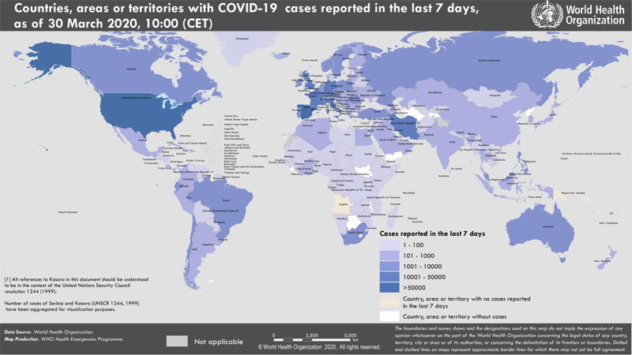

Текущая ситуация с коронавирусом Covid-19: информация ВОЗ от 30.03.2020
Date: 2020-03-31 07:10:58
Topic: Инфекционные заболевания, клиника, диагностика и лечение
На сайте ВОЗ размещены данные на 30.03.2020 о распространении в мире инфекции, вызванной коронавирусом Covid-19 (SARS-CoV-2). Всего в мире на 30.03.2020 зарегистрировано 693224 подтверждённых случаев заболевания.
На сайте ВОЗ размещены данные на 30.03.2020 о распространении в мире инфекции, вызванной коронавирусом Covid-19 (SARS-CoV-2).
- Всего в мире зарегистрировано 693224 подтверждённых случаев заболевания коронавирусом Covid-19, в том числе 1534 в России, 480 в Украине, 294 в Казахстане, 94 в Республике Беларусь (рис. 1).
- Неблагоприятная ситуация по коронавирусу складывается в США (122653 случаев заболевания), в Италии(97689), в Испании (78797), в Германии (57298), во Франции (39642), в Иране (38309).
- Зарегистрировано 33106 летальных исходов (всего в мире), из них 10781 — в Италии, 6528 — в Испании, 3310 — в Китае, 2640 — в Иране, 2602 — во Франции, 2112 — в США.
Рис. 1. Распространение нового коронавируса Covid-19: страны и территории с подтверждёнными случаями на 30.03.2020 г.

По данным мониторинга ArcGIS, число инфицированных на текущий момент 785709 (1836 в России), из них 37686 летальных случаев (9 в России), число выздоровевших 165837.
Другие материалы
This article comes from Антибиотики и антимикробная терапия
http://antibiotic.ru/
The URL for this story is: http://antibiotic.ru/index.php?article=2949 |
|
|